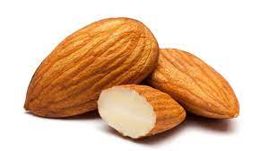

Recipe for a Better Sleep
Certain foods have the natural ability to enhance sleep quality because they are rich in particular nutrients and compounds that interact with the body's sleep-regulating mechanisms. Consuming these foods can play a pivotal role in improving the overall sleep experience by inducing relaxation, increasing the release of sleep-promoting hormones, or by relaxing the nervous system. Their benefits aren't just restricted to inducing sleep; many of these foods can also help in sustaining deeper and more restful sleep cycles.
-
Cherry, especially tart cherries are among the few foods naturally rich in melatonin, which regulates our sleep cycle.
Click to read more -

Almonds are an excellent source of magnesium, a vital mineral that plays a crucial role in ensuring good quality sleep.
Click to read more -
Turkey contains the amino acid tryptophan, which increases the production of the sleep-regulating hormone melatonin.
Click to read more